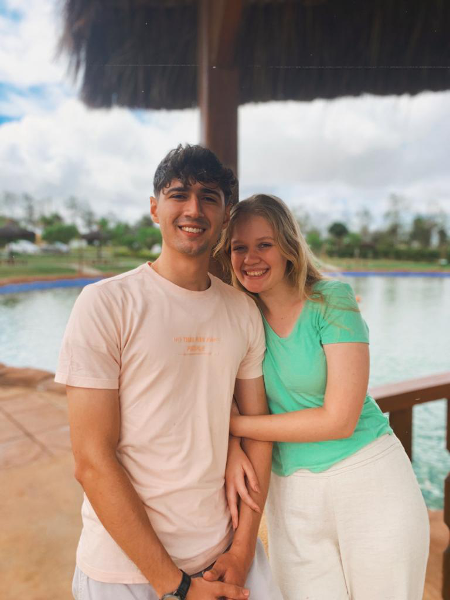

Thiago Dias Cirino | WDD 130
Hello, I'm Thiago Dias Cirino a 22 years old guy born in Salvador - Brazil. I currently live in Vitória da Conquista - Brazil.
I am a university mentor with a passion for languages and technology. My journey so far has included full-time missionary and administrative assistant, where I've honed my skills in customer service and business management.
I am fluent in Portuguese, English, and Spanish and possess strong skills in interpersonal communication.
Outside of work, I enjoy playing basketball, reading, playing the guitar, and going out with my fiancée. I am excited about my upcoming marriage scheduled for the end of this year.
I like helping out in my community. I volunteer for different causes, mentor others, and take part in local activities. Making a difference in people's lives is important to me, and I'm always looking for ways to give back.